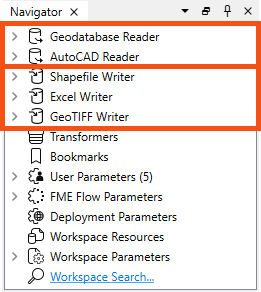
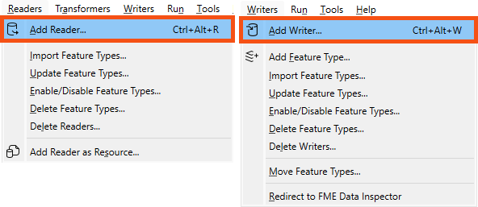

It's important to note that readers and writers don’t appear as objects on the Workbench canvas. Their feature types do, but readers and writers don't.
Instead, they are represented by entries in the Navigator window, as in the above screenshot.
After completing this lesson, you’ll be able to:
Many users begin a workspace by adding a single reader and writer. However, you will quickly find yourself needing to add additional readers, writers, or feature types. Additionally, FME can read/write data using:
An FME workspace is not limited to any particular number of readers or writers; readers and writers can be added to a workspace at any time, any number of formats can be used, and there does not need to be an equal number of readers and writers.
For example, the Navigator window below shows this workspace contains two readers and three writers, each with different formats.

It's important to note that readers and writers don’t appear as objects on the Workbench canvas. Their feature types do, but readers and writers don't.
Instead, they are represented by entries in the Navigator window, as in the above screenshot.
Additional readers or writers are added to a translation using the Quick Add menu:

...Or by selecting Readers > Add Reader (Writers > Add Writer) from the menu bar:

...Or for readers, by clicking and dragging a file onto the canvas:

All these actions open a dialog, similar to the Generate Workspace dialog, in which the parameters for the new reader or writer can be defined:

If you use Quick Add or the click-and-drag methods, the Add Reader dialog will automatically fill in the Format parameter. Note that FME will guess the Format based on the file ending when clicking and dragging, so make sure to double-check it. Some reader formats use the same file ending, e.g., GeoJSON and JSON can both use the .json file ending.
You can add as many readers and writers as you require in this way.
If you no longer need a reader or writer, then you can delete it using the menu bar:

Alternatively, it's possible to right-click a reader/writer in the Navigator window and choose the Delete option.
Readers and writers can be updated so that older workspaces have the speed and functionality available in a newer version of FME. You can update a reader/writer by right-clicking the reader/writer in the Navigator window and choosing the Update option:

This tool provides the option to update the reader or update the list of feature types being read. This way, the workspace can be updated if the source data changes. Another way to update feature types is Reader > Update Feature Types on the menu bar.
Do you want to always read all the feature types in a dataset, even if it changes? You can merge feature types in this case.
Learn more in Define Schema Dynamically from Incoming Datasets.
The Import Feature Types function adds feature types to an existing dataset by importing the schema from any dataset.
The log will display processing information and the feature types will be added to the selected dataset.
If the structure of the data changes in your workspace (for example, the schema changes or an attribute type changes) you will usually want to keep your workspace up-to-date. This is a particularly useful feature if you are working with databases, or if you are sharing data within a workgroup.
Select Readers > Update Feature Types or Writers > Update Feature Types.
You can delete feature types by right-clicking them on the Canvas and selecting Delete.
If you delete the last feature type belonging to a reader or writer, FME will ask if you also wish to delete the reader or writer. We recommend doing so unless you plan to add feature types later.